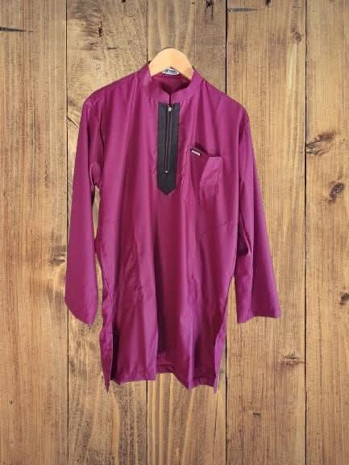

Rp125.000 Rp150.000
Gamis Kurtah Dewasa Kain Katun Toyobo
Gamis Kurtah adalah pilihan busana muslim pria yang mengutamakan kenyamanan dan gaya sederhana namun tetap elegan. Terbuat dari bahan katun berkualitas yang sejuk dan menyerap keringat, gamis ini cocok digunakan untuk aktivitas harian maupun acara keagamaan.
- Bahan: Katun premium, adem dan nyaman dipakai
- Warna: Merah Marun Kombinasi
- Ukuran: M, L, XL, XXL
- Desain: Minimalis dengan detail resleting depan
- Cocok untuk: Sholat, pengajian, atau kegiatan formal
Dapatkan Gamis Kurtah Ini sekarang juga untuk melengkapi koleksi busana muslim Anda!
Pesan via WhatsApp